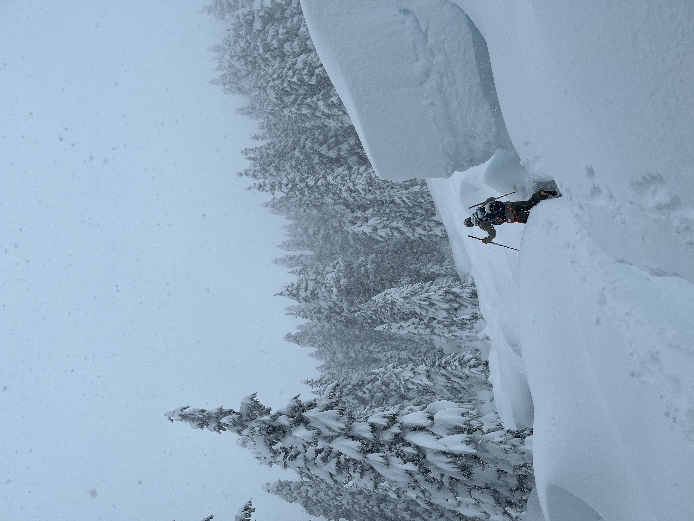

Sea to Sky • Touring Guide
•
Winter 2025/26
Machtls Ski Touring Guide
This map-linked ski touring guide brings together GPX tracks, photos, and practical notes in one place.
I created it after finding it surprisingly difficult to locate concise, route-specific GPX information without endlessly scrolling through scattered trip reports.
These routes reflect personal experiences and are not guaranteed to represent the best or safest approach under all conditions.
Cheers Machtl
Always assess current local conditions and consult the avalanche forecast before heading out.
Remark: This project is a work in progress, and I’ll be adding new tours as I go.